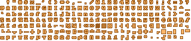
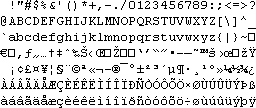
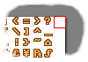
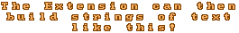

The Text Blitter is a graphical extension designed to eliminate the need for fonts in your games and applications. Using a single bitmap you can display an infinite combination of letters and strings on screen and have full control over how they are displayed. The Extension allows you to replicate the effect used in consoles and older games, giving your work a much more professional and commercial appearance.
There are primarily two parts to the system; a bitmap, and a string of characters. The bitmap holds the graphical-representation of all the characters required and the string tells the system how the characters are laid out on the bitmap and where to look for them.
The image below shows an example of a bitmap that could be used...

An opposing character map like the one below is set within the extension. This is usually 256 characters in length (if you require the whole Extended-ASCII character set). The following has been split over lines for your viewing convenience, in practice it comes as one long string.

The extension also needs to know how big each character is, along with the width of the image. The size of the characters determine the width of pixels taken from the map and the width of the characters when drawn.
The width of the image is also vitally important. The extension uses a wrapping system to find the characters on the image-map. If it doesn't think it can fit another character on the end of the image it will move to the next line and continue searching there... If you dont crop your image-map you could cause problems and the resulting output may be incorrect
The following example shows how the extension could mistake the edge at the image as a character. To resolve this problem you can either crop the bitmap to exclude this extra section or manually set the image width to the correct length. The Extension will not even know the extra part exists, however, it will occupy unnecessary space in memory

When all the correct settings are in place the extension can align the characters in any order you require...

This is only a brief explanation of how things work, check out the other sections on the internals of the extension as well as the example files.
Content and Design are Copyright (c) 2001-2002 Christopher Lightfoot. All rights reserved.